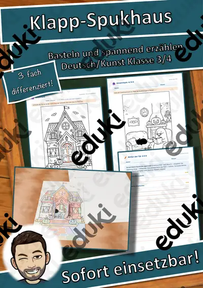
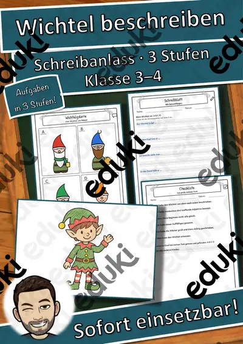

Hier sind die 120 neuesten von 274 Materialien. Alle im Material-Finder ansehen

Klapp-Spukhaus zu Halloween – Bastelvorlage mit Schreibanlass und Wortspeicher, 3-fach differenziert (Klasse 3/4)

Ramadan und Zuckerfest – Lesespurgeschichte mit Rätselaufgaben (Klasse 4)

Elisabeth von Thüringen – Brot, Rosen, Nächstenliebe – Lesespurgeschichte mit Rätselaufgaben (Klasse 4)

Gotteshäuser der Weltreligionen – Lesespurgeschichte mit Rätselaufgaben (Klasse 4)

Wichtel beschreiben: Schreibanlass mit 4 Wichtelbildern, Wortspeicher und Checkliste (Klasse 3–4)

Wortgitter-Suchsel: Ritter und Burg – Wortgitter – Klasse 1–4

Wortgitter-Suchsel: Dinosaurier – Wortgitter – Klasse 1–4

Wortgitter-Suchsel: Weltall – Wortgitter – Klasse 1–4

Wortgitter-Suchsel: Am Meer – Wortgitter – Klasse 1–4

Wortgitter-Suchsel: Wetter – Wortgitter – Klasse 1–4

Wortgitter-Suchsel: Fahrzeuge – Wortgitter – Klasse 1–4

Wortgitter-Suchsel: Piraten – Wortgitter – Klasse 1–4

Wortgitter-Suchsel: Sport – Wortgitter – Klasse 1–4

Wortgitter-Suchsel: Ostern – Wortgitter – Klasse 1–4

Himmel und Hölle: Haustiere – Himmel und Hölle – Klasse 1–4

Wort-Bild-Karten: Ritter und Burg – Wort-Bild-Karten – Klasse 1–4

Wort-Bild-Karten: Dinosaurier – Wort-Bild-Karten – Klasse 1–4

Lesen, Malen und Kleben: Familie – Lesen und Malen – Klasse 1–4

Wort-Bild-Karten: Weltall – Wort-Bild-Karten – Klasse 1–4

Lesen, Malen und Kleben: Fahrzeuge – Lesen und Malen – Klasse 1–4

Sprechanlässe: Im Restaurant – Sprechanlässe – Klasse 1–4

Sprechanlässe: Hobbys – Sprechanlässe – Klasse 1–4

Sprechanlässe: Familie – Sprechanlässe – Klasse 1–4

Sprechanlässe: Wilde Tiere – Sprechanlässe – Klasse 1–4

Sprechanlässe: Fahrzeuge – Sprechanlässe – Klasse 1–4

Ich habe, wer hat? Ritter und Burg – Lese-Schleifen – Klasse 1–4

Ich habe, wer hat? Dinosaurier – Lese-Schleifen – Klasse 1–4

Lesen, Malen und Kleben: Wilde Tiere – Lesen und Malen – Klasse 1–4

Wortspiele: Sag es nicht! Weltall – Klasse 2–4

Wortgitter-Suchsel: Sommer – Wortgitter – Klasse 1–4

Klammerkarten: Haustiere – Klammerkarten – Klasse 1–4

Wort-Bild-Karten: Am Meer – Wort-Bild-Karten – Klasse 1–4

Lesen, Malen und Kleben: Kleidung – Lesen und Malen – Klasse 1–4

Sprechanlässe: Im Zoo – Sprechanlässe – Klasse 1–4

Ich habe, wer hat? Am Meer – Lese-Schleifen – Klasse 1–4

Wortspiele: Sag es nicht! Am Meer – Klasse 2–4

Himmel und Hölle: Sport – Himmel und Hölle – Klasse 1–4

Lesen, Malen und Kleben: Im Zoo – Lesen und Malen – Klasse 1–4

Sprechanlässe: Kleidung – Sprechanlässe – Klasse 1–4

Sprechanlässe: Ostern – Sprechanlässe – Klasse 1–4

Ich habe, wer hat? Wetter – Lese-Schleifen – Klasse 1–4

Wortspiele: Sag es nicht! Wetter – Klasse 2–4

Wortspiele: Sag es nicht! Ritter und Burg – Klasse 2–4

Lesen, Malen und Kleben: Im Restaurant – Lesen und Malen – Klasse 1–4

Lesen, Malen und Kleben: Ostern – Lesen und Malen – Klasse 1–4

Sprechanlässe: Frühling – Sprechanlässe – Klasse 1–4

Ich habe, wer hat? Fahrzeuge – Lese-Schleifen – Klasse 1–4

Wortspiele: Sag es nicht! Fahrzeuge – Klasse 2–4

Wortspiele: Sag es nicht! Familie – Klasse 2–4

Wortgitter-Suchsel: Familie – Wortgitter – Klasse 1–4

Himmel und Hölle: Körper und Sinne – Himmel und Hölle – Klasse 1–4

Klammerkarten: Körper und Sinne – Klammerkarten – Klasse 1–4

Wort-Bild-Karten: Fahrzeuge – Wort-Bild-Karten – Klasse 1–4

Wort-Bild-Karten: Familie – Wort-Bild-Karten – Klasse 1–4

Lesen, Malen und Kleben: Frühling – Lesen und Malen – Klasse 1–4

Sprechanlässe: Sommer – Sprechanlässe – Klasse 1–4

Sprechanlässe: Wetter – Sprechanlässe – Klasse 1–4

Memory: Ritter und Burg – Bild-Wort-Spiele – Klasse 1–4

Ich habe, wer hat? Familie – Lese-Schleifen – Klasse 1–4

Wortspiele: Sag es nicht! Im Zoo – Klasse 2–4

Wortgitter-Suchsel: Im Zoo – Wortgitter – Klasse 1–4

Wortgitter-Suchsel: Wilde Tiere – Wortgitter – Klasse 1–4

Himmel und Hölle: Märchen – Himmel und Hölle – Klasse 1–4

Wort-Bild-Karten: Im Zoo – Wort-Bild-Karten – Klasse 1–4

Lesen, Malen und Kleben: Sommer – Lesen und Malen – Klasse 1–4

Sprechanlässe: Bienen – Sprechanlässe – Klasse 1–4

Domino: Ritter und Burg – Bild-Wort-Spiele – Klasse 1–4

Ich habe, wer hat? Im Zoo – Lese-Schleifen – Klasse 1–4

Wortspiele: Sag es nicht! Wilde Tiere – Klasse 2–4

Klammerkarten: Märchen – Klammerkarten – Klasse 1–4

Wort-Bild-Karten: Wilde Tiere – Wort-Bild-Karten – Klasse 1–4

Lesen, Malen und Kleben: Bienen – Lesen und Malen – Klasse 1–4

Sprechanlässe: Kochen und Backen – Sprechanlässe – Klasse 1–4

Ich habe, wer hat? Wilde Tiere – Lese-Schleifen – Klasse 1–4

Wortspiele: Sag es nicht! Bienen – Klasse 2–4

Wortgitter-Suchsel: Bienen – Wortgitter – Klasse 1–4

Himmel und Hölle: Zirkus – Himmel und Hölle – Klasse 1–4

Wort-Bild-Karten: Bienen – Wort-Bild-Karten – Klasse 1–4

Lesen, Malen und Kleben: Kochen und Backen – Lesen und Malen – Klasse 1–4

Sprechanlässe: Obst und Gemüse – Sprechanlässe – Klasse 1–4

Memory: Dinosaurier – Bild-Wort-Spiele – Klasse 1–4

Ich habe, wer hat? Bienen – Lese-Schleifen – Klasse 1–4

Wortspiele: Sag es nicht! Piraten – Klasse 2–4

Lesen, Malen und Kleben: Wetter – Lesen und Malen – Klasse 1–4

Wortgitter-Suchsel: Körper und Sinne – Wortgitter – Klasse 1–4

Wort-Bild-Karten: Piraten – Wort-Bild-Karten – Klasse 1–4

Lesen, Malen und Kleben: Obst und Gemüse – Lesen und Malen – Klasse 1–4

Sprechanlässe: Im Garten – Sprechanlässe – Klasse 1–4

Domino: Dinosaurier – Bild-Wort-Spiele – Klasse 1–4

Ich habe, wer hat? Piraten – Lese-Schleifen – Klasse 1–4

Wortspiele: Sag es nicht! Körper und Sinne – Klasse 2–4

Klammerkarten: Zirkus – Klammerkarten – Klasse 1–4

Wort-Bild-Karten: Körper und Sinne – Wort-Bild-Karten – Klasse 1–4

Sprechanlässe: Berufe – Sprechanlässe – Klasse 1–4

Memory: Weltall – Bild-Wort-Spiele – Klasse 1–4

Ich habe, wer hat? Körper und Sinne – Lese-Schleifen – Klasse 1–4

Wortspiele: Sag es nicht! Ostern – Klasse 2–4

Wortgitter-Suchsel: Frühling – Wortgitter – Klasse 1–4

Himmel und Hölle: Weltall – Himmel und Hölle – Klasse 1–4

Wort-Bild-Karten: Sport – Wort-Bild-Karten – Klasse 1–4

Lesen, Malen und Kleben: Im Garten – Lesen und Malen – Klasse 1–4

Sprechanlässe: Ritter und Burg – Sprechanlässe – Klasse 1–4

Domino: Weltall – Bild-Wort-Spiele – Klasse 1–4

Memory: Am Meer – Bild-Wort-Spiele – Klasse 1–4

Ich habe, wer hat? Sport – Lese-Schleifen – Klasse 1–4

Wortspiele: Sag es nicht! Kleidung – Klasse 2–4

Wörtliche Rede sicher beherrschen

Klammerkarten: Weltall – Klammerkarten – Klasse 1–4

Wort-Bild-Karten: Ostern – Wort-Bild-Karten – Klasse 1–4

Lesen, Malen und Kleben: Berufe – Lesen und Malen – Klasse 1–4

Sprechanlässe: Dinosaurier – Sprechanlässe – Klasse 1–4

Domino: Am Meer – Bild-Wort-Spiele – Klasse 1–4

Ich habe, wer hat? Ostern – Lese-Schleifen – Klasse 1–4

Wortgitter-Suchsel: Bauernhof – Wortgitter – Klasse 1–4

Himmel und Hölle: Ritter und Burg – Himmel und Hölle – Klasse 1–4

Wort-Bild-Karten: Frühling – Wort-Bild-Karten – Klasse 1–4

Wort-Bild-Karten: Sommer – Wort-Bild-Karten – Klasse 1–4

Lesen, Malen und Kleben: Haustiere – Lesen und Malen – Klasse 1–4

Sprechanlässe: Weltall – Sprechanlässe – Klasse 1–4

Memory: Piraten – Bild-Wort-Spiele – Klasse 1–4
Keine Materialien gefunden – versuch einen anderen Suchbegriff oder Filter.